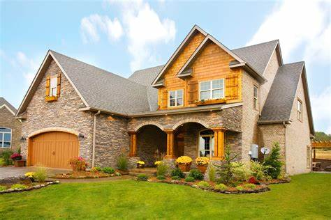
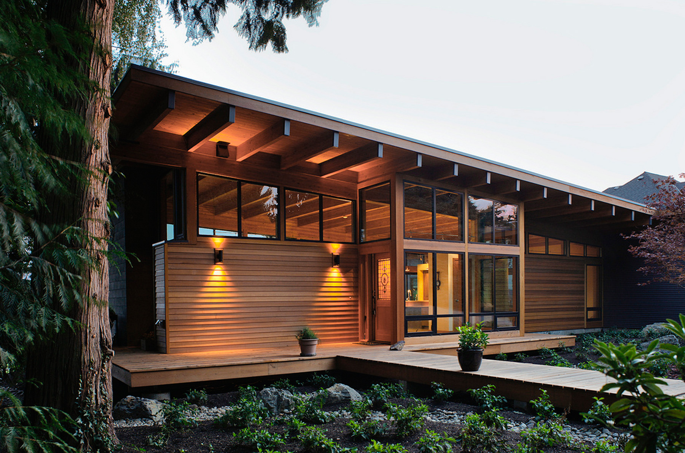
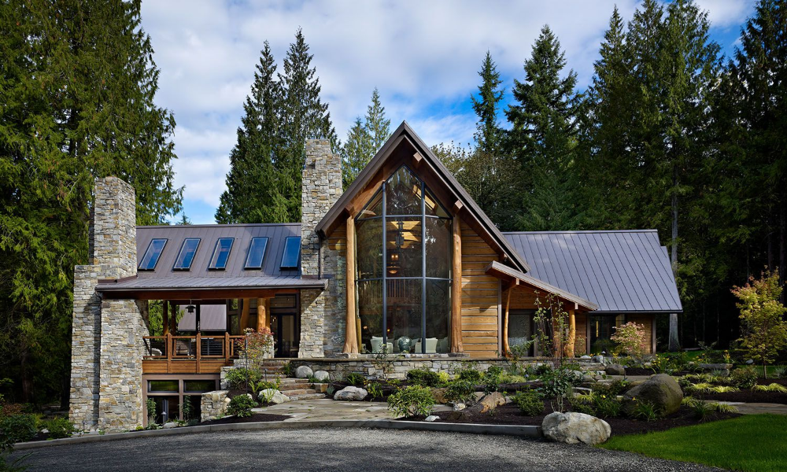

Find your
Prefect Home!


Traditional country houses, with their timeless charm, often showcase
regional architectural
styles and materials. For example, English country houses may feature brick or stone with steeply
pitched roofs and
dormer windows, while French ones use local stone or stucco and incorporate rustic elegance. Interiors
commonly
highlight natural materials like wood and stone, with cozy, vintage-inspired decor. Landscaping
typically includes
extensive gardens and practical outbuildings, such as barns or sheds. These homes reflect historical
periods and local
resources, blending historical charm with modern adaptations to maintain their allure.

A hill house is a type of residence strategically positioned on a
hillside to maximize views and natural light while
minimizing environmental impact. these homes often
feature terraced
levels, large windows, and overhangs to capitalize on panoramic vistas and create a sense of openness.
The construction
may incorporate materials like stone or timber, integrating with the natural surroundings. Interior layouts are typically open and fluid, often with multiple levels that follow
the contours of
the hill, decks that extend the living area into the
landscape.

Cedar Haven houses are celebrated for their harmonious blend with
nature, characterized by the
prominent use of cedar wood in both structural and aesthetic elements. These homes typically feature
warm, natural tones
and textures, with cedar siding and shingles that weather gracefully over time. The design often
emphasizes open, airy
interiors with large windows that frame picturesque views and invite abundant natural light. Cedar Haven
houses are
designed to integrate seamlessly with their surroundings, and
prioritize sustainability and energy efficiency.